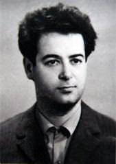

ЛЮДИ
Студенты и преподавательский состав 1968-1978 гг.Кортнев А.В. - организатор школы физиков-акустиков в ОПИ, награжден: орденом Ленина, 7 медалями, 3 нагрудными знаками, Почетной Грамотой Президиума Верховного Совета УССР.
Назаренко А.Ф. - выпускник. МТФ ОПИ 1958, награжден 7 медалями ВДНХ СССР.
Замуреев А.М. - выпускник МТФ ОПИ в 1962 году, автор хонинговального вертикального полуавтомата.
Крисилов Ю.Д. - заведующий кафедрой радиотехнических приборов (1969-1985)
Старцев В.И. - выпускник ФРЭ (ИИБРТ) ОПИ, 1968 г.
Первушин В.Н. - выпускник электротехнического факультета ОПИ 1955 г.
Андреев Л.П. - выпускник 1952 ТЭФ ОПИ, первый декан АЭФ, почетный ветеран ОПИ.
Боресков К. - выпускник ОПИ, 1928 г.
Борексков К. - доцент ОИИ (ОПИ), 1933 г.
Боресков К. - герой Социалистического Труда, трижды лауреат Государственной премии СССР, академик Академии наук СССР. Создал Институт катализа в Сибири, который был назван в его честь.

1) Варламов М.Л. - автор статьи, однокурсник и коллега Борескова К. Полвека посвятил научной деятельности в ОПИ. 2) Заслуженный деятель науки и техники УССР, награжден восемью правительственными наградами, орденом «Трудового Красного Знамени», медалью «За оборону Одессы».
Выпускной вечер, 1978 г.
1) Массовая походка студентов группы КА-734 МСФ ОПИ на первую Юморину в Одессе, 1973 стр. 2) Выпускники МСФ ОПИ 1978 года, группа КА-734.
1) Студенты группы КА-734 в составе 22 человек мужского пола, самой дружественной на факультете, принимали участие в первой в городе Одессе Юморине, 1973 году. 2) Второй справа налево - Асауляк М.В.
Студенты группы КА-734 в Тайге в поселке Комсомольск на разбудить инфраструктуры вместе с студантамы Мед. института (сводный строительный отряд), 1974 г.
1) Варламов М.Л. - автор статьи, однокурсник и коллега Борескова К. Полвека посвятил научной деятельности в ОПИ. 2) Заслуженный деятель науки и техники УССР, награжден восемью правительственными наградами, орденом «Трудового Красного Знамени», медалью «За оборону Одессы».
Посвящение в студенты ОПИ. Фото 1970-х годов.
Посвящение в студенты ОПИ. Фото 1970-х годов.
Посвящение в студенты ОПИ. Фото 1970-х годов.